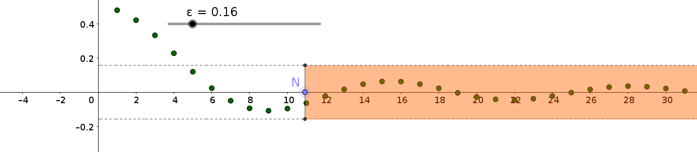
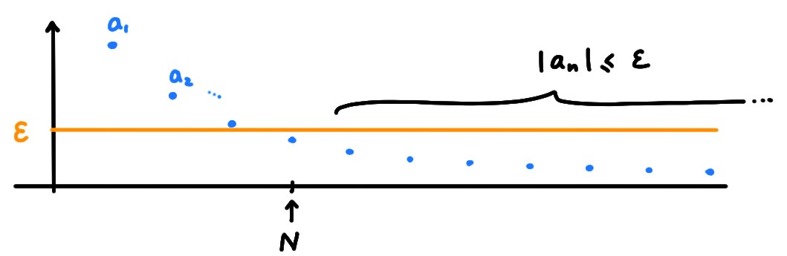
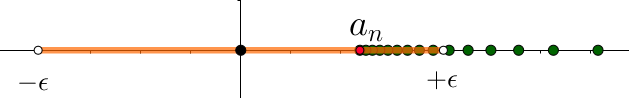
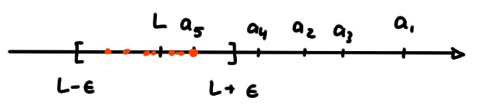

La notion centrale de l'analyse est celle de limite, que l'on va aborder
ici pour la première fois dans le cadre simple des suites réelles.
Définir rigoureusement ce que signifie ''tendre vers \(L\)'' est une des
difficultés rencontrées dans ce cours. Nous allons donc commencer par le cas
\(L=0\) avant de passer au cas général.
Avant tout, pour un réel, ''être proche de zéro''
signifie que la distance qui le
sépare de \(0\), c'est-à-dire sa valeur absolue, est petite.
Donc pour voir si les valeurs d'une suite s'approchent de zéro,
il est naturel de considérer la distance
\[
\mathrm{dist}(a_n,0)=|a_n-0|=|a_n|\,,
\]
et de quantifier précisément ce qu'on entend par ''cette distance devient
toujours plus petite à mesure que \(n\) augmente''.
(compléter)
On dit qu'une suite \((a_n)\) tend vers zéro (lorsque \(n\to\infty\)) si
pour tout \(\varepsilon>0\) il existe un entier \(N\) (qui dépend de \(\varepsilon\))
tel que \(|a_n| \leqslant \varepsilon\) pour tout \(n\geqslant N\), c'est-à-dire tel que
\[a_n\in [-\varepsilon,\varepsilon]
\qquad \forall n\geqslant N\,.
\]
On écrira alors \(\displaystyle\lim_{n\to \infty} a_n=0\), ou simplement \(a_n\to 0\).
Une autre façon de formuler cette définition: \((a_n)\) tend vers zéro lorsque
\(n\to\infty\) si pour tout \(\varepsilon>0\) (une fenêtre), tous les éléments de
la suite, à l'exception d'un nombre fini d'entre eux, sont dans l'intervalle
\([-\varepsilon,\varepsilon]\):

La suite \(a_n=\frac{1}{n}\) tend vers zéro.
En effet, montrons que pour un \(\varepsilon>0\) quelconque fixé, on peut toujours
trouver un entier \(N\) tel que \(|a_n|\leqslant \varepsilon\) pour tout \(n\geqslant N\).

Or la condition \(|a_n|=|\frac{1}{n}|\leqslant \varepsilon\) est en fait équivalente à
\(\frac{1}{n}\leqslant
\varepsilon\), et
comme cette dernière est équivalente à \(n\geqslant \frac{1}{\varepsilon}\),
on peut définir \(N\) comme
le plus petit entier plus grand ou égal à
\(\frac{1}{\varepsilon}\),
\[ N:= \bigl[\frac{1}{\varepsilon}\bigr]+1\,,
\]
et ainsi garantir que \(n\geqslant N\) implique \(|a_n|\leqslant \varepsilon\).

On voit, dans ce dernier exemple, comme le \(N\) cherché dépend de \(\varepsilon\)!
Car en général, plus \(\varepsilon>0\) est petit, plus il faut
augmenter \(n\) pour faire
rentrer \(a_n\) dans un intervalle \([-\varepsilon,\varepsilon]\).
La définition de ''tendre vers \(L\)'' est seulement une adaptation de la
définition de ''tendre vers zéro'': pour que \(a_n\) tende vers \(L\), il faut
que la suite \(a_n':= a_n-L\) tende vers zéro.
Soit \(L\in \mathbb{R}\).
On dit qu'une suite \((a_n)\)
tend vers \(L\) (lorsque \(n\to\infty\))
si pour tout \(\varepsilon>0\) il existe un entier positif \(N\) tel que
\(|a_n-L|\leqslant \varepsilon\) pour tout \(n\geqslant N\), c'est -à-dire tel que
\[
a_n\in [L-\varepsilon,L+\varepsilon]\qquad \forall n\geqslant N\,.
\]
On dira alors que \(L\) est la limite de la suite \((a_n)\), et on
écrira
\(\displaystyle\lim_{n\to \infty} a_n=L\)
ou simplement \(a_n\to L\).

Lorsqu'il existe un \(L\in \mathbb{R}\) tel que \((a_n)\) tend vers \(L\), on dit que
la suite converge; si elle ne converge pas,
on dit qu'elle diverge.
Soit \(a_n=\frac{3n+2}{2n+1}\).
Montrons que \(\lim_{n\to \infty} a_n=\tfrac32\).
Pour commencer, étudions la différence
\[
|a_n-\tfrac32|
=\Bigl|\frac{3n+2}{2n+1}-\frac32\Bigr|
=\frac{1}{2(2n+1)}\,.
\]
Or cette expression peut être rendue aussi petite que nécessaire.
En effet, fixons un \(\varepsilon>0\).
On aura
\[
\frac{1}{2(2n+1)}\leqslant \varepsilon
\]
si et seulement si
\[ n\geqslant \frac12 \Bigl(\frac{1}{2\varepsilon}-1\Bigr)\,. \]
Donc, en définissant
\[ N:= \Bigl[\frac12 \Bigl(\frac{1}{2\varepsilon}-1\Bigr)\Bigr]+1\,, \]
on a bien que \(|a_n-\frac32|\leqslant \varepsilon\) pour tout \(n\geqslant N\).
Soit \((a_n)\) telle que \(a_n\to 0\).
Parmis les affirmations
suivantes, lesquelles sont toujours vraies?
[ ] \((a_n)\) est décroissante.
[ ] \(|a_n|\to 0\).
[ ] \(a_n=0\) pour tout \(n\) suffisamment grand.
[ ] Si \((b_n)\) est une suite quelconque,
alors \(a_nb_n\to 0\).
[ ] Si \((b_n)\) est une autre suite telle que \(b_n\to 0\), alors
\(\frac{a_n}{b_n}\to 1\).
[ ] Il existe \(M>0\) tel que \(|a_k|\leqslant M\) pour tout \(k\).
[ ] \(\frac{1}{a_n}\to \infty\)
[ ] Pour tout \(\delta>0\), l'ensemble des entiers \(n\) tels que
\(a_n\not\in\,\, ]-\delta,\delta[\) est fini.
Soit \((a_n)\) une suite tendant vers \(L\in \mathbb{R}\).
Parmi les affirmations suivantes, lesquelles sont toujours vraies?
[ ] L'ensemble \(\{n\in \mathbb{N}\,:\,a_n=L\}\) contient une infinité
d'éléments.
[ ] Pour tout \(\eta>0\), le nombre d'entiers \(n\) tels que \(a_n\geqslant
L+\eta\) est fini.
[ ] Pour tout \(\varepsilon>0\), on a \(a_n\in [L-\varepsilon,L+\varepsilon]\)
pour tous les indices \(n\), sauf éventuellement un nombre fini.
[ ] Pour tout \(\varepsilon>0\), il existe un entier \(N\) tel que
\(|a_n-L|N\).
[ ] \(a_n\neq L\) pour tout \(n\).
[ ] La suite \(b_n=e^{a_n}\) est bornée.
Soit \((a_n)\) une suite qui ne tend pas vers \(L\in \mathbb{R}\).
Parmis les affirmations
suivantes, lesquelles sont toujours vraies?
[ ] Pour tout \(\varepsilon<0\) il existe un entier \(N\) tel que
\(|a_n-L|>\varepsilon\) pour tout \(n< N\).
[ ] Pour tout \(\varepsilon>0\) il existe un entier \(N\) tel que
\(|a_n-L|[ ] Pour tout \(\varepsilon>0\) il existe un entier \(N\) tel que
\(|a_n-L|>\varepsilon\) pour tout \(n\geqslant N\).
[ ] Il existe un \(\varepsilon>0\) tel que \(a_n\not
\in \,\,[L-\varepsilon,L+\varepsilon]\) pour une infinité d'indices \(n\).
[ ] Il existe un \(\varepsilon>0\) tel que \(a_n\not
\in \,\,[L-\varepsilon,L+\varepsilon]\) pour tout \(n\geqslant N\).